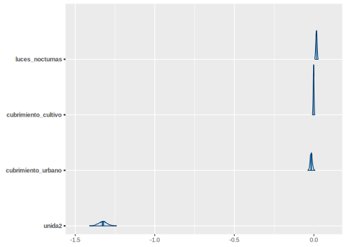
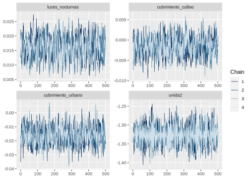

15.6 Estimación del modelo para D6
Se debe cargar el archivo encuesta_mrp.rds y el archivo statelevel_predictors_df.rds creado previamente. A continuaciones preparamos los datos para el indicador D6
byAgrega <- c( "dam2", "area", "edad", "etnia",
"anoest", "unida")
encuesta_df_agg <-
encuesta_mrp %>%
group_by_at(all_of(byAgrega)) %>%
summarise(n = n(),
pobres = sum(usametodo), #D6
nopobres = n - pobres, .groups = "drop")
encuesta_df_agg %<>% inner_join(statelevel_predictors_df, by = "dam2")
tba(encuesta_df_agg %>% head(10))| dam2 | area | edad | etnia | anoest | unida | n | pobres | nopobres | dam | area1 | sexo2 | edad2 | edad3 | edad4 | edad5 | etnia2 | anoest2 | anoest3 | anoest4 | etnia1 | tiene_acueducto | piso_tierra | alfabeta | hacinamiento | tasa_desocupacion | luces_nocturnas | cubrimiento_cultivo | cubrimiento_urbano | modificacion_humana | accesibilidad_hospitales | accesibilidad_hosp_caminado |
|---|---|---|---|---|---|---|---|---|---|---|---|---|---|---|---|---|---|---|---|---|---|---|---|---|---|---|---|---|---|---|---|
| 05001 | 0 | 2 | 3 | 3 | 1 | 1 | 1 | 0 | 05 | 0.9832 | 0.5299 | 0.2671 | 0.2201 | 0.2355 | 0.106 | 0.0251 | 0.2598 | 0.4048 | 0.2287 | 9e-04 | 0.0354 | 0.0024 | 0.0258 | 0.0833 | 0.0062 | 46.057 | 2.0996 | 29.9636 | 0.6882 | 9.4651 | 44.0778 |
| 05001 | 0 | 2 | 3 | 3 | 2 | 3 | 3 | 0 | 05 | 0.9832 | 0.5299 | 0.2671 | 0.2201 | 0.2355 | 0.106 | 0.0251 | 0.2598 | 0.4048 | 0.2287 | 9e-04 | 0.0354 | 0.0024 | 0.0258 | 0.0833 | 0.0062 | 46.057 | 2.0996 | 29.9636 | 0.6882 | 9.4651 | 44.0778 |
| 05001 | 0 | 3 | 3 | 3 | 1 | 1 | 1 | 0 | 05 | 0.9832 | 0.5299 | 0.2671 | 0.2201 | 0.2355 | 0.106 | 0.0251 | 0.2598 | 0.4048 | 0.2287 | 9e-04 | 0.0354 | 0.0024 | 0.0258 | 0.0833 | 0.0062 | 46.057 | 2.0996 | 29.9636 | 0.6882 | 9.4651 | 44.0778 |
| 05001 | 0 | 3 | 3 | 3 | 2 | 1 | 1 | 0 | 05 | 0.9832 | 0.5299 | 0.2671 | 0.2201 | 0.2355 | 0.106 | 0.0251 | 0.2598 | 0.4048 | 0.2287 | 9e-04 | 0.0354 | 0.0024 | 0.0258 | 0.0833 | 0.0062 | 46.057 | 2.0996 | 29.9636 | 0.6882 | 9.4651 | 44.0778 |
| 05001 | 0 | 4 | 3 | 3 | 1 | 1 | 1 | 0 | 05 | 0.9832 | 0.5299 | 0.2671 | 0.2201 | 0.2355 | 0.106 | 0.0251 | 0.2598 | 0.4048 | 0.2287 | 9e-04 | 0.0354 | 0.0024 | 0.0258 | 0.0833 | 0.0062 | 46.057 | 2.0996 | 29.9636 | 0.6882 | 9.4651 | 44.0778 |
| 05001 | 0 | 4 | 3 | 4 | 1 | 1 | 0 | 1 | 05 | 0.9832 | 0.5299 | 0.2671 | 0.2201 | 0.2355 | 0.106 | 0.0251 | 0.2598 | 0.4048 | 0.2287 | 9e-04 | 0.0354 | 0.0024 | 0.0258 | 0.0833 | 0.0062 | 46.057 | 2.0996 | 29.9636 | 0.6882 | 9.4651 | 44.0778 |
| 05001 | 0 | 4 | 3 | 4 | 2 | 1 | 1 | 0 | 05 | 0.9832 | 0.5299 | 0.2671 | 0.2201 | 0.2355 | 0.106 | 0.0251 | 0.2598 | 0.4048 | 0.2287 | 9e-04 | 0.0354 | 0.0024 | 0.0258 | 0.0833 | 0.0062 | 46.057 | 2.0996 | 29.9636 | 0.6882 | 9.4651 | 44.0778 |
| 05001 | 0 | 5 | 3 | 2 | 1 | 5 | 5 | 0 | 05 | 0.9832 | 0.5299 | 0.2671 | 0.2201 | 0.2355 | 0.106 | 0.0251 | 0.2598 | 0.4048 | 0.2287 | 9e-04 | 0.0354 | 0.0024 | 0.0258 | 0.0833 | 0.0062 | 46.057 | 2.0996 | 29.9636 | 0.6882 | 9.4651 | 44.0778 |
| 05001 | 1 | 2 | 1 | 4 | 1 | 1 | 0 | 1 | 05 | 0.9832 | 0.5299 | 0.2671 | 0.2201 | 0.2355 | 0.106 | 0.0251 | 0.2598 | 0.4048 | 0.2287 | 9e-04 | 0.0354 | 0.0024 | 0.0258 | 0.0833 | 0.0062 | 46.057 | 2.0996 | 29.9636 | 0.6882 | 9.4651 | 44.0778 |
| 05001 | 1 | 2 | 2 | 2 | 2 | 1 | 1 | 0 | 05 | 0.9832 | 0.5299 | 0.2671 | 0.2201 | 0.2355 | 0.106 | 0.0251 | 0.2598 | 0.4048 | 0.2287 | 9e-04 | 0.0354 | 0.0024 | 0.0258 | 0.0833 | 0.0062 | 46.057 | 2.0996 | 29.9636 | 0.6882 | 9.4651 | 44.0778 |
Con la información ordenada ajustamos el siguiente modelo
library(rstan)
library(rstantools)
library(rstanarm)
fit <- stan_glmer(
cbind(pobres, nopobres) ~ (1 | dam2) +
(1 | edad) +
(1 | etnia) +
(1 | area:anoest) +
(1 | edad:anoest) +
tasa_desocupacion +
luces_nocturnas +
cubrimiento_cultivo +
cubrimiento_urbano +
unida,
family = binomial(link = "logit"),
data = encuesta_df_agg,
verbose = TRUE,
cores = 7,
chains = 4,
iter = 1000
)
saveRDS(fit, "Recursos/Día4/Sesion3/UNFPA/D6/fit_bayes.rds")El resultado del modelo es el siguiente.
fit<-readRDS("Recursos/Día4/Sesion3/UNFPA/D6/fit_bayes.rds")
tba(coef(fit)$dam2 %>% head(10))| (Intercept) | tasa_desocupacion | luces_nocturnas | cubrimiento_cultivo | cubrimiento_urbano | unida2 | |
|---|---|---|---|---|---|---|
| 05001 | 1.2740 | 16.5374 | 0.0162 | -0.0016 | -0.0166 | -1.3263 |
| 05002 | 1.2280 | 16.5374 | 0.0162 | -0.0016 | -0.0166 | -1.3263 |
| 05045 | 1.3864 | 16.5374 | 0.0162 | -0.0016 | -0.0166 | -1.3263 |
| 05051 | 1.1071 | 16.5374 | 0.0162 | -0.0016 | -0.0166 | -1.3263 |
| 05059 | 1.1469 | 16.5374 | 0.0162 | -0.0016 | -0.0166 | -1.3263 |
| 05079 | 1.0885 | 16.5374 | 0.0162 | -0.0016 | -0.0166 | -1.3263 |
| 05088 | 1.0871 | 16.5374 | 0.0162 | -0.0016 | -0.0166 | -1.3263 |
| 05129 | 1.2386 | 16.5374 | 0.0162 | -0.0016 | -0.0166 | -1.3263 |
| 05134 | 1.0533 | 16.5374 | 0.0162 | -0.0016 | -0.0166 | -1.3263 |
| 05154 | 1.0646 | 16.5374 | 0.0162 | -0.0016 | -0.0166 | -1.3263 |
15.6.1 Validación del modelo
library(posterior)
library(bayesplot)
posterior <- as.array(fit)
parameters <- dimnames(posterior)$parameters
# var_names <- grep(pattern = "area",x = parameters,value = TRUE)
var_names <- c("luces_nocturnas", "cubrimiento_cultivo",
"cubrimiento_urbano", "unida2" )
mcmc_areas(fit, pars = var_names)
mcmc_trace(fit,pars = var_names)
encuesta_mrp2 <- inner_join(encuesta_mrp, statelevel_predictors_df)
y_pred_B <- posterior_epred(fit, newdata = encuesta_mrp2)
rowsrandom <- sample(nrow(y_pred_B), 100)
y_pred2 <- y_pred_B[rowsrandom, ]
ppc_dens_overlay(y = as.numeric(encuesta_mrp2$usametodo), y_pred2) 
15.6.2 Predicción en el censo
poststrat_df <- censo_mrp %>%
group_by_at(byAgrega) %>%
summarise(n = sum(n), .groups = "drop")
poststrat_df <- left_join(poststrat_df, statelevel_predictors_df, by = "dam2")
epred_mat <- posterior_epred(fit, newdata = poststrat_df,
type = "response", allow.new.levels = TRUE)Asignar la predicción a la base de poststrat_df
poststrat_df$epred_mat <- colMeans(epred_mat)15.6.3 Metodología de Benchmarking
- Validarse los nombres de las covariables disponibles en censo y encuesta, que deben ser las mismas con las que se han venido trabajando, para este caso resultaron
names_cov <- c("area" , "etnia" , "edad" , "unida" )- Calcular las estimaciones para cada una de las variables de la base de datos de
encuesta_mrputilizando el indicador de interés.
encuesta_mrp %<>% mutate(pobreza = usametodo,
dam = substr(dam2,1,2))
paso <- sapply(names_cov, function(byi){
encuesta_mrp %>%
group_by_at(all_of(byi)) %>%
summarise(Nhat = sum(fexp),
t_pobreza = sum(pobreza*fexp),
medias = weighted.mean(pobreza,fexp))
})
col_names <- names(unlist(paso["t_pobreza",]))
data.frame( Categoría = unlist(paso["area",]),
Total = unlist(paso["t_pobreza",]),
Hat_Media = unlist(paso["medias",])) %>% slice(1:10) %>%
tba()| Categoría | Total | Hat_Media | |
|---|---|---|---|
| area1 | 0 | 1621354.9 | 0.6426 |
| area2 | 1 | 6369090.8 | 0.6510 |
| etnia1 | 1 | 388109.0 | 0.5720 |
| etnia2 | 2 | 680752.8 | 0.6340 |
| etnia3 | 3 | 6921583.9 | 0.6558 |
| edad1 | 2 | 852596.8 | 0.3413 |
| edad2 | 3 | 2680194.2 | 0.6968 |
| edad3 | 4 | 2337250.5 | 0.7702 |
| edad4 | 5 | 2120404.0 | 0.7244 |
| unida1 | 1 | 5273609.1 | 0.8096 |
- Crear variables dummys en
poststrat_dfy multiplicar cada variable por la predicciónepred_mat
poststrat_df %<>%
fastDummies::dummy_cols(select_columns = names_cov, remove_selected_columns = FALSE)
poststrat_df %<>%
mutate_at(vars(matches("_\\d$")) ,~.*poststrat_df$epred_mat)
tba( poststrat_df %>% select(starts_with("edad"),epred_mat) %>% head(10))- Con la función
calibse procede a calcular los \(g_k\), verificando que el proceso se haya realizado con éxito y exista convergencia
library(sampling)
poststrat_df$gk <- calib(
Xs = poststrat_df %>% select(matches("_\\d{,2}$")), ## Variable dummys
d = poststrat_df$n, ## Conteos en el post-estrato
total = unlist(paso["t_pobreza",]), ## Valores objetivo
method="logit") ## Método empleado
checkcalibration(Xs = poststrat_df %>%
select(matches("_\\d{,2}$")),
d = poststrat_df$n,
total = unlist(paso["t_pobreza",]),
g = poststrat_df$gk)## $message
## [1] "the calibration is done"
##
## $result
## [1] TRUE
##
## $value
## [1] 1e-06- Realizar validación sobre los resultados obtenidos.
hist(poststrat_df$gk)
Continuando con la validación se define define la columna pobreza2
poststrat_df %<>%
mutate(pobreza2 = epred_mat *gk,
pobreza2 = ifelse(pobreza2>1, 1, pobreza2),
pobreza2 = ifelse(pobreza2<0, 0, pobreza2)) Paso seguido realizamos el calculo de los totales calibrados.
temp <- map_df(names_cov ,~ poststrat_df %>%
group_by_at(all_of(.x)) %>%
summarise(
Nhat = sum(n),
t_pobreza = sum(n*pobreza2)) %>%
transmute(
Cal_Media = t_pobreza/Nhat,
Variable = paste0(.x, get(.x) )))
data.frame( Categoría = unlist(paso["area",]),
Hat_Media = unlist(paso["medias",])) %>%
cbind(temp) %>% head(10) %>% tba()| Categoría | Hat_Media | Cal_Media | Variable | |
|---|---|---|---|---|
| area1 | 0 | 0.6426 | 0.6351 | area0 |
| area2 | 1 | 0.6510 | 0.6491 | area1 |
| etnia1 | 1 | 0.5720 | 0.5634 | etnia1 |
| etnia2 | 2 | 0.6340 | 0.6268 | etnia2 |
| etnia3 | 3 | 0.6558 | 0.6536 | etnia3 |
| edad1 | 2 | 0.3413 | 0.3391 | edad2 |
| edad2 | 3 | 0.6968 | 0.6944 | edad3 |
| edad3 | 4 | 0.7702 | 0.7670 | edad4 |
| edad4 | 5 | 0.7244 | 0.7204 | edad5 |
| unida1 | 1 | 0.8096 | 0.8585 | unida1 |
También es posible hacer validaciones visuales.
library(survey)
library(srvyr)
library(patchwork)
source("Recursos/Día4/Sesion3/0Recursos/funciones_mrp.R")
poststrat_df %<>% mutate(yk_lmer = epred_mat, yk_bench = pobreza2)
diseno <- encuesta_mrp %>%
mutate(yk_dir = pobreza,
dam = substr(dam2,1,2)) %>%
as_survey_design(weights = fexp)
bynames <- c("area", "edad", "dam", "etnia")
plot_uni <- map(
.x = setNames(bynames, bynames),
~ plot_compare2(
sample_diseno = diseno,
poststrat = poststrat_df,
by1 = .x
)
)
plot_uni$dam$Plot$plot1/
(plot_uni$edad$Plot$plot1 +
plot_uni$area$Plot$plot1+ plot_uni$etnia$Plot$plot1)
15.6.4 Estimación y mapa del indicador.
Después de todos el proceso de estandarización, creación de variables covariables, estimación del modelo y validaciones realizadas, la estimación puntual se reduce a operaciones algebraicas simples.
poststrat_df2 <- poststrat_df %>% filter(anoest != "99")
dat_dam2 <- poststrat_df2 %>% group_by(dam2) %>%
summarise(
Benchmarking_estimate = sum(n * pobreza2) / sum(n),
.groups = "drop"
)En este paso validamos que las estimaciones no superen el valor de 1 o sean menores o iguales a creo.
dat_dam2 %>% summarise(Validar = sum(Benchmarking_estimate >= 1 | Benchmarking_estimate < 0 ))| Validar |
|---|
| 0 |
El cuadrado medio del error lo obtenemos con la función Aux_Agregado que hemos usado previamente.
mrp_cme <-
Aux_Agregado(poststrat = poststrat_df,
epredmat = epred_mat,
byMap = "dam2") %>%
select(-mrp_estimate)
dat_dam2 <- dat_dam2 %>% left_join(mrp_cme) %>%
mutate(mrp_cv = mrp_estimate_se/Benchmarking_estimate*100) %>%
arrange(desc(mrp_cv))
tba(dat_dam2 %>% slice(1:10))| dam2 | Benchmarking_estimate | mrp_estimate_se | mrp_cv |
|---|---|---|---|
| 52354 | 0.5545 | 0.0665 | 11.9972 |
| 97511 | 0.3266 | 0.0391 | 11.9696 |
| 52320 | 0.5534 | 0.0658 | 11.8920 |
| 52215 | 0.5411 | 0.0641 | 11.8418 |
| 52506 | 0.5721 | 0.0669 | 11.6874 |
| 52317 | 0.5653 | 0.0657 | 11.6244 |
| 52022 | 0.5693 | 0.0661 | 11.6069 |
| 52565 | 0.5509 | 0.0636 | 11.5405 |
| 52699 | 0.5609 | 0.0632 | 11.2701 |
| 91263 | 0.5416 | 0.0609 | 11.2383 |
15.6.5 Mapas para el indicador D6
library(sp)
library(sf)
library(tmap)
ShapeSAE <- read_sf("Recursos/Día4/Sesion3/Shape/COL_dam2.shp")
P1_ingresolp <- tm_shape(ShapeSAE %>% left_join(dat_dam2, by = "dam2"))
brks_lp <- c(0, 0.1, 0.2, 0.3, 0.4, 0.5, 0.6, 0.7, 1)
tmap_options(check.and.fix = TRUE)
Mapa_lp <-
P1_ingresolp + tm_polygons(
"Benchmarking_estimate",
breaks = brks_lp,
title = "D6",
palette = "-YlOrRd"
) + tm_layout(asp = 0)
tmap_save(
Mapa_lp,
"UNFPA/D6/Estados2.jpeg",
width = 6920,
height = 4080,
asp = 0
)
Mapa_lp